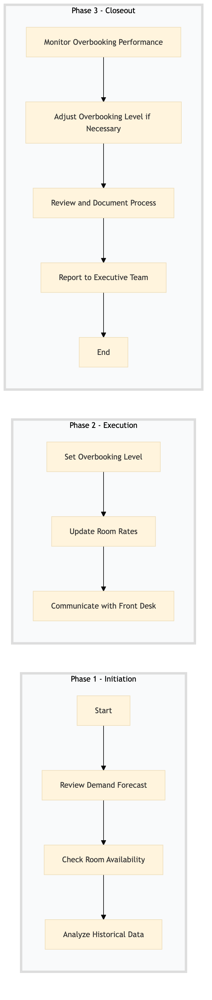

| Role | Steps |
|---|---|
| Revenue Manager | 1.1 1.2 1.3 2.1 2.2 2.3 3.1 3.2 3.3 3.4 |
| Step | Name | Role | System | Input | Output | KPI | Dec? | Exc? | Pain Point / Risk |
|---|---|---|---|---|---|---|---|---|---|
| 1.1 | Review Demand Forecast | Revenue Manager | IDeaS G3 RMS | Weekly demand forecast report | Demand analysis memo | Less than 10 min | N | Y | Inaccurate demand forecasts leading to overbooking or underbooking. |
| 1.2 | Check Room Availability | Revenue Manager | Oracle OPERA Cloud | Current room availability data | Room availability report | Less than 5 min | N | Y | Outdated or incorrect room availability information causing misinformed decisions. |
| 1.3 | Analyze Historical Data | Revenue Manager | Oracle OPERA Cloud | Historical booking and no-show data | No-show analysis report | Less than 15 min | N | Y | Lack of historical data affecting the accuracy of overbooking decisions. |
| 2.1 | Set Overbooking Level | Revenue Manager | Oracle OPERA Cloud | Demand analysis memo, room availability report, no-show analysis report | Overbooking level setting document | Less than 20 min | Y | N | Balancing between maximizing occupancy and avoiding over-occupancy. |
| 2.2 | Update Room Rates | Revenue Manager | Oracle OPERA Cloud, SynXis CRS | Overbooking level setting document | Updated room rates | Less than 10 min | N | Y | Incorrect rate updates leading to revenue loss. |
| 2.3 | Communicate with Front Desk | Revenue Manager | Oracle OPERA Cloud, Book4Time | Overbooking level setting document, updated room rates | Communication plan | Less than 5 min | N | Y | Inconsistent communication leading to operational confusion. |
| 3.1 | Monitor Overbooking Performance | Revenue Manager | Oracle OPERA Cloud, Microsoft Power BI | Real-time booking data | Performance monitoring report | Less than 5 min every hour | Y | N | Inadequate monitoring leading to missed opportunities for optimization. |
| 3.2 | Adjust Overbooking Level if Necessary | Revenue Manager | Oracle OPERA Cloud | Performance monitoring report | Adjusted overbooking level document | Less than 10 min | Y | N | Fixed overbooking levels without adjustments may lead to inefficiencies. |
| 3.3 | Review and Document Process | Revenue Manager | Oracle OPERA Cloud, Salesforce | Overbooking level setting document, adjusted overbooking level document | Process review memo | Less than 15 min | N | Y | Lack of process documentation leading to inconsistencies. |
| 3.4 | Report to Executive Team | Revenue Manager | Salesforce, Microsoft Power BI | Process review memo, performance monitoring report | Executive report | Less than 10 min | N | Y | Insufficient reporting leading to strategic misalignment. |
Setting the overbooking level at a Marriott full-service hotel involves analyzing demand forecasts, reviewing room availability, and adjusting rates to maximize revenue while ensuring guest satisfaction.